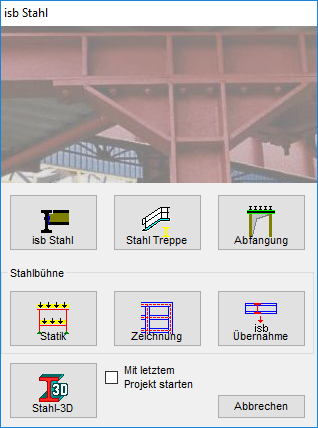

")
Erzeugen und Bearbeiten von Stahlbaukonstruktionen. Öffnet den Dialog isb Stahl zur Auswahl einer Stahlbau-Variante.
Alle Varianten können mit der Übergabe der Zeichnungen an das allgemeine Konstruktionsprogramm dort weiterbearbeitet und vervollständigt werden. Sie müssen über Schreibrechte im Programmverzeichnis (..\ISBCAD) verfügen.
 |
isb Stahl |
Es können für Träger, Stützen, Rahmenecken, Firste und Stöße, Fundamente etc. Zeichnungen erstellt werden, die durch einfache Eingaben vorbereitet werden können. |
Stahl Treppe |
Nach der Eingabe von wenigen Parametern wird eine komplette Werkstattplanung inklusive Stückliste erstellt. |
Abfangung |
Zwei Möglichkeiten werden für die Ausführung einer Abfangung angeboten. Das Schlitzverfahren und Abfangung mit Querträgern. |
Stahlbühne |
Für die Bearbeitung von Stahlbühnen stehen drei Möglichkeiten zur Auswahl. Diese können selbstverständlich auch miteinander kombiniert werden. |
Stahl-3D |
Eingabemodellierer in 3D mit automatischen Werkstattzeichnungen. |
Mit letztem Projekt starten |
Setzen Sie einen Haken in die Checkbox, damit die zuletzt bearbeitete Datei geladen wird. |